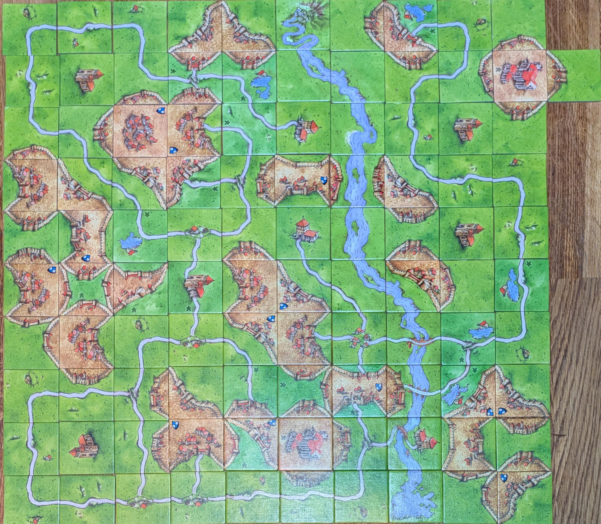

Perfectly tiling Carcassonne, leaving nothing unfinished.
The basegame, first expansion and river tiles together are 101 tiles. So it seemed like a neat challenged to create a perfect 10x10+1 layout. Additional rules I followed for esthetics
- the river must run from one side to the other.
- No 2x2 area should have 4 road-only tiles (eg: no tiny road circles)
- No castles that are just 2 small caps.
- A cloisters can not be directly adjacent to another cloister.
Thank you so much for the link! I read a bunch of Norvig's stuff, but somehow missed this.
I don't think Norvig's problem statement is more strict. Norvig does add the rule about all shields and monasteries being right side up, very hard. But I have the rules for no trivial road circles, castles or adjacent monasteries. Which I think may be equally tricky. I kind of want to solve all these constraints together now. Also in my solution there is still a 4-pointer castle anyway, which is a blemish.
You can see how convient these simply constructions are as the final solution on that page has 5 2x2-road-loops, 7 trivial castles and 3 adjacent monasteries.
I think it's more fun to treat it is as an esthetic optimization problem anyway. That way you are never done.
Start tile is supposed to be excluded when you use the river. I just followed that rule. I can see the argument for using 102 tiles. More interesting question is what makes a layout aesthetic more generally. Obviously using all tiles of some logical set is part of that. But maybe road loops should not be allowed at all? You should use all expansions? It's a bit limiting as an art form but who knows.
It's 101 tiles total, prime numbers are going prime. I figured leaving out one tile would be cheating.
I did figure out that the base game + first expansion + mini expansion 1 & 2 = 100 tiles, so if somebody happens to have that subset they are welcome to try a clean 10 by 10 version.
Also, base game + all expansions (except 5, because of the abbey tiles that would ruin it) + mini 1, 3 and 7 = 256 tiles = 16*16. This would be the perfect result I think. But I don't have the money for it.
Another choice is all expansions and the river = 256 tiles, which is pretty damn clean. And you just ignore the abbey's
https://www.reddit.com/r/boardgames/comments/1ly4psq/a_perfect_carcassonne_tiling_leaving_nothing/
https://www.reddit.com/r/boardgames/comments/1ly4tpx/perfectly_tiling_carcassonne_leaving_nothing/ (dubbele post, samengevoegd)